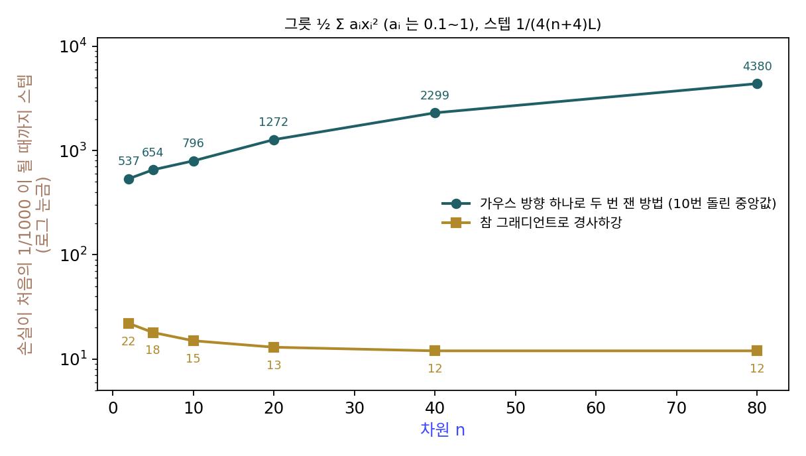
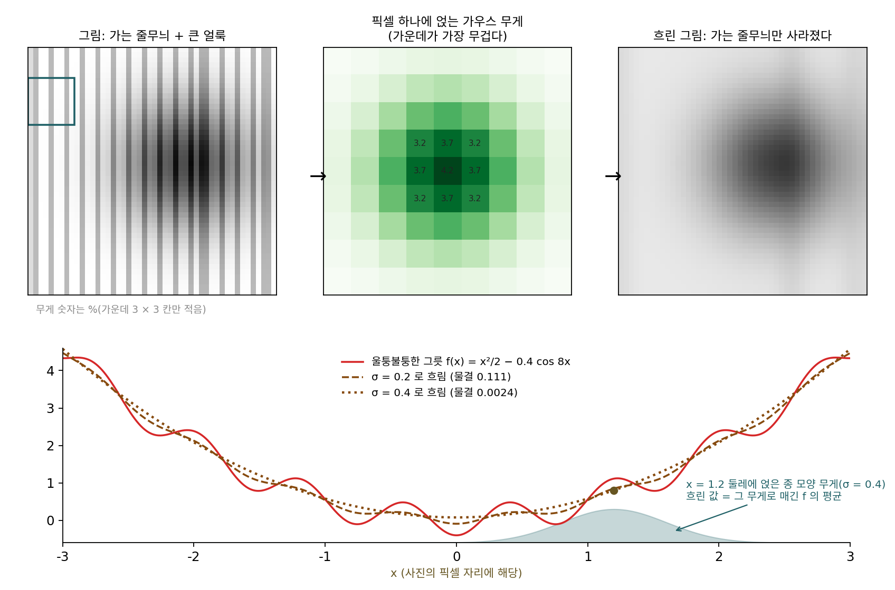
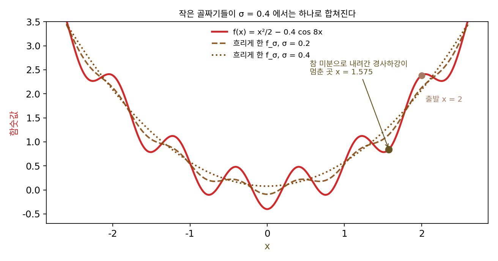
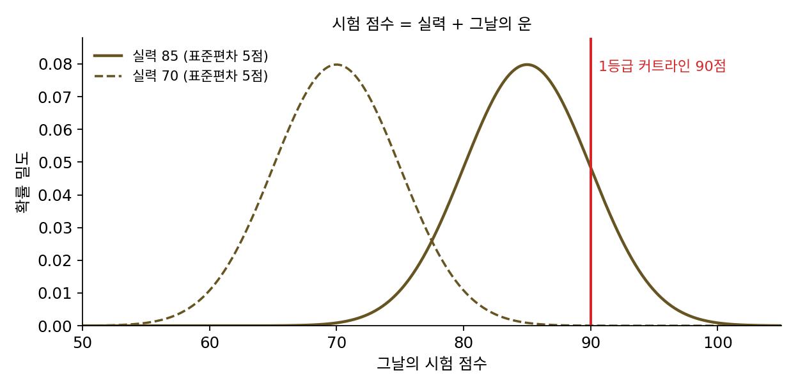
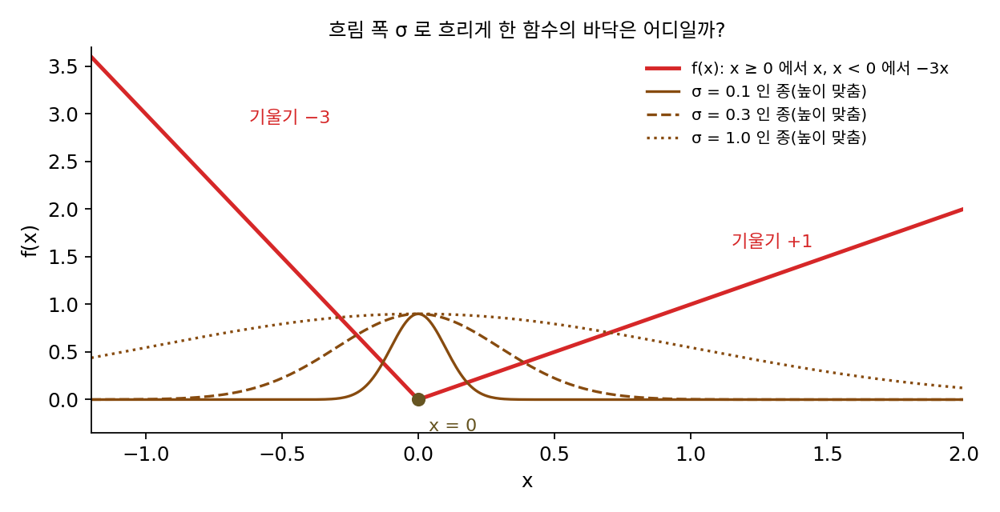
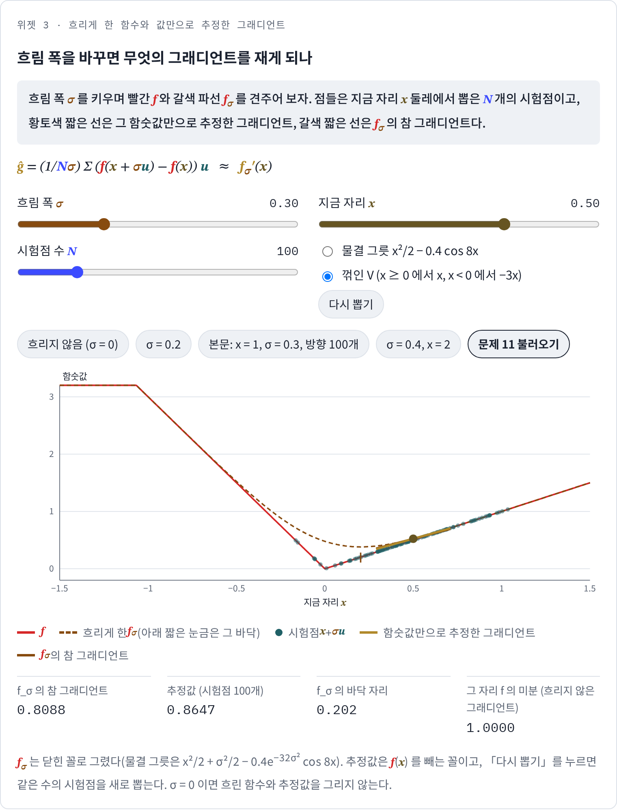
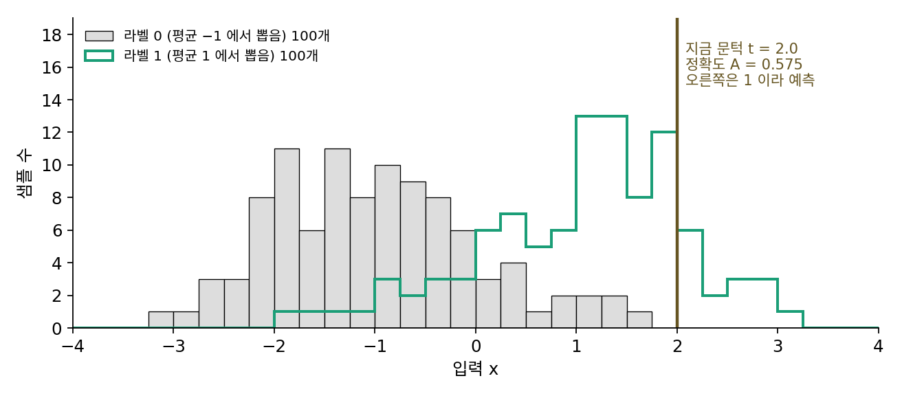

가우시안 스무딩: 흐리게 한 함수의 그래디언트는 값의 가중 평균
지금까지의 상자는 매끄러웠다. 유한 차분은 간격이 작으면 참 그래디언트에 다가갔고, 동시 섭동도 흔드는 크기 c 가 작으면 그 방향의 그래디언트를 쟀다. 그런데 실제로 줄이고 싶은 목표는 매끄럽지 않은 경우가 많다. 정확도는 맞힌 개수를 센 값이라 계단 모양이어서, 아주 작은 간격으로 재면 미분이 거의 어디서나 0이다. 손실 지형에 작은 골짜기가 가득하면, 참 미분을 그대로 따라가는 방법은 가장 가까운 작은 골짜기에 빠진다. 이럴 때는 c 를 작게 두는 것이 오히려 손해일 수 있다. 그렇다면 흔드는 크기를 일부러 크게 둔 추정은 무엇의 그래디언트를 재고 있는 것일까?
역사: 네스테로프와 스포코이니가 값을 매기다
흐리게 한 함수의 그래디언트를 값만으로 추정하는 생각은 여러 곳에서 쓰였다. 2005년 에이브러햄 플랙스먼(Abraham Flaxman), 애덤 칼라이(Adam Tauman Kalai), 브렌던 맥머핸(H. Brendan McMahan)은 무작위로 고른 점 하나의 함숫값만으로 그래디언트를 추정해, 매 순간 손실의 값만 알려 주는 온라인 학습에서 경사하강을 돌렸다. 논문 제목이 「그래디언트 없는 경사하강(gradient descent without a gradient)」이었다. 남은 물음은 값이었다. 함숫값만 쓰면 그래디언트를 쓰는 방법보다 얼마나 느린가?
가속 경사법으로 알려진 유리 네스테로프(Yurii Nesterov)가 이 물음에 값을 매겼다. 통계학자 블라디미르 스포코이니(Vladimir Spokoiny)와 함께 다듬은 그의 논문은 2017년 『계산수학의 기초(Foundations of Computational Mathematics)』에 실렸다(온라인 공개는 2015년). 제목은 「볼록 함수의 무작위 그래디언트 없는 최소화(Random Gradient-Free Minimization of Convex Functions)」이고, 네스테로프는 2011년에 같은 제목의 토론 논문을 혼자 먼저 냈다. 그들은 방향을 가우스 분포로 뽑고, 그렇게 만든 추정값이 가우스 노이즈로 흐리게 한 함수의 그래디언트를 잰다는 데서 출발했다. 그리고 함숫값만 쓰는 방법은 매끄러운 문제든 아니든 그래디언트를 쓰는 방법보다 대략 차원 수 n 배 많은 스텝이 든다는 것을 보였다. 가속을 더하면 매끄러운 문제에서 오차가 스텝 수의 제곱에 반비례해 준다는 것, 미분할 수 없는 함수에도 쓸 수 있다는 것도 함께 보였다.


변수가 n 개면 n 배 느리다는 건 계산 안 해 봐도 알 것 같은데요. 유한 차분도 함숫값을 n + 1 번 쓰잖아요.

유한 차분은 n + 1 번 재면 그래디언트를 거의 그대로 얻어요. 무작위 방향 하나로 잰 값은 매번 크게 틀리고요. 크게 틀린 값으로 걸으면 n 배에 끝날지, n² 배가 될지, 아예 못 갈지 어떻게 알죠?

음… 얼마나 틀렸는지 따져야 하는데, 미분할 수 없는 함수면 그래디언트가 없으니까 무엇과 견줘 틀렸다고 할지부터 막히네요.

그들의 출발점이 거기였어요. 가우스 방향으로 만든 추정값을 흐리게 한 함수의 그래디언트로 읽었어요. 흐리게 한 함수는 원래 함수가 꺾여 있어도 매끄러우니 견줄 기준이 생기죠.

2005년 논문은 돌아가긴 했는데 얼마나 느린지는 몰랐던 거네요. 네스테로프의 2011년 토론 논문까지 6년이 걸렸고요.

그런데 흐리게 한 함수가 구체적으로 어떻게 생겼는지 궁금해요. 작은 골짜기가 가득한 함수를 흐리면 그 골짜기들은 어떻게 돼요?
울퉁불퉁한 그릇
흐리게 한다는 것이 무엇을 바꾸는지 보려면 작은 골짜기가 가득한 함수가 좋다. f(x) = x²/2 − 0.4 cos 8x 는 큰 그릇 x²/2 에 물결 −0.4 cos 8x 를 얹은 것이다. 진짜 바닥은 x = 0 이고(f = −0.4), [−3, 3] 안에 작은 골짜기의 바닥(극소점)이 아홉 개 있다. x = 2 에서 참 미분으로 경사하강(학습률 0.1)을 200스텝 하면 x = 1.575 의 작은 골짜기에서 멈춘다. 그 자리의 함숫값은 0.841 로 진짜 바닥보다 1.2 넘게 높다.
이제 x 에서 함숫값을 하나만 읽지 말고, x 둘레에서 표준편차가 σ 인 정규분포로 뽑은 점들의 함숫값을 평균한다고 하자. 이 평균을 x 의 함수로 본 것이 흐리게 한 함수 fσ(x) 인데, 흐린 사진에서 픽셀 하나가 이웃 픽셀들의 가중 평균이 되는 것과 같다. 이 함수에서는 물결이 줄어든다. 계산해 보면 fσ(x) = x²/2 + σ²/2 − 0.4 e−32σ² cos 8x 이고, 물결의 높이가 0.4 에서 σ = 0.2 일 때 0.111, σ = 0.4 일 때 0.0024 로 준다.

| 흐림 폭 σ | 물결의 높이 | [−3, 3] 안 극소점 | x = 2 에서 fσ 를 경사하강(0.1, 200스텝)한 끝점 |
|---|---|---|---|
| 0 (흐리지 않음) | 0.4000 | 9 | 1.575 |
| 0.2 | 0.1112 | 3 | 0.677 |
| 0.3 | 0.0225 | 1 | 0.000 |
| 0.4 | 0.0024 | 1 | 0.000 |
σ = 0.3 이면 작은 골짜기들이 하나로 합쳐져 경사하강이 진짜 바닥에 닿지만, fσ 를 내려가려면 그 그래디언트가 있어야 한다. 이 그릇은 식을 알아서 계산할 수 있었지만, 값만 돌려주는 상자라면 어떻게 할까? 놀랍게도 흐리게 한 함수의 그래디언트는 f 의 미분 없이, 둘레에서 뽑은 점들의 함숫값만으로 적힌다.
왜 이렇게 적히는지는 한 줄로 설명된다. fσ(x) 는 f 를 정규분포의 종 모양 곡선으로 가중 평균한 것이라, x 를 움직이는 것은 f 를 그대로 두고 종을 옮기는 것과 같다. 종 모양 곡선 φ(u) 를 미분하면 −uφ(u) 가 되므로, 그래디언트는 함숫값에 무게 u/σ 를 매긴 평균이 된다. 둘째 식에서 f(x) 를 빼도 E[u] = 0 이라 평균은 바뀌지 않지만, 노이즈가 줄어들기 때문에 뺀다. x = 1, σ = 0.3 에서 참값은 fσ′(1) = 1.1777 인데, 방향 100개로 추정하기를 2,000번 되풀이하면 f(x) 를 빼지 않은 평균은 1.1816 ± 0.2494, 뺀 평균은 1.1788 ± 0.1358 로 표준편차가 거의 반으로 준다.
이렇게 함수를 가우스 노이즈로 흐리게 한 fσ 를 대신 다루고, 그 그래디언트를 함숫값의 가중 평균으로 추정하는 것을 가우시안 스무딩 (가우스 노이즈로 흐리게 하기 / Gaussian smoothing)이라 한다. 둘째 식에서 평균 대신 방향 하나만 쓰면 동시 섭동의 추정값(한쪽 차분, 가우스 방향)과 같은 꼴이다. 흔드는 크기를 작게 두면 f 의 그래디언트를 재고, 크게 두면 흐리게 한 fσ 의 그래디언트를 잰다. 같은 추정 방법이 흔드는 크기에 따라 다른 함수를 내려가는 것이다.

값만 써서 실제로 내려가 보면, x = 2 에서 σ = 0.4, 스텝마다 방향 20개, 학습률 0.1 로 200스텝 걸은 뒤 마지막 50스텝의 평균 자리가 −0.085, 표준편차가 0.064 다. 물결 하나의 폭(2π/8 = 0.785)보다 훨씬 좁은 범위에서 진짜 바닥 둘레를 맴돈다. 추정값의 노이즈 때문에 한 점에 멈추지는 않는다.
ML에서: 미분할 수 없는 보상과 점수 함수
정확도, F1 점수, 사람이 매긴 선호, 코드가 테스트를 통과했는지, 시뮬레이션에서 로봇이 넘어졌는지는 모두 미분할 수 없거나 값만 돌려주는 목표다. MeZO 논문도 정확도나 F1 같은 미분할 수 없는 목표를 직접 최적화할 수 있다고 적었다.
가우시안 스무딩의 식을 조금 바꿔 적으면 이 목표들을 다루는 강화학습의 식과 만난다. z = x + σu 로 놓으면 z 는 평균 x, 표준편차 σ 인 정규분포에서 뽑은 점이고, 무게 u/σ = (z − x)/σ² 는 그 정규분포 밀도의 로그를 평균 x 로 미분한 값이다. 그래서 흐린 함수의 그래디언트는 「뽑은 점의 함숫값 × 그 점을 뽑을 로그 확률의 그래디언트」의 평균, ∇ₓ E[f(z)] = E[f(z) ∇ₓ log p(z)] 가 된다. 이 무게를 점수 함수(score function)라 부르고, 정책이 뽑은 응답의 보상에 로그 확률의 그래디언트를 곱해 평균하는 REINFORCE 가 같은 식이다. 가우시안 스무딩에서 f(x) 를 빼던 것은 REINFORCE 의 베이스라인(모든 보상에서 같은 기준값을 빼기)에 해당한다. 가우시안 스무딩은 파라미터 위에 정규분포라는 정책을 씌워 REINFORCE 를 돌리는 것이라 볼 수 있다.
문제 10. 1등급 커트라인
시험의 1등급 커트라인이 90점이다. 학생의 실력을 m 이라 하면 시험 점수는 m 에 표준편차 5점인 노이즈가 더해진 값이다(그날의 운). (가) 실력 85인 학생이 1등급을 받을 확률은? 실력이 1점 오르면 그 확률은 얼마나 오르는가? (나) 실력이 70이면? (다) 노이즈의 표준편차가 2점, 10점이면 실력 85에서 (가)의 두 값은?

(가)부터 할게요. 실력 85인 학생은 운이 좋아 5점 넘게 더 나오면 1등급이니까, 표준편차 하나 위보다 클 확률 0.1587 이에요.
실력이 1점 오르면? 등급은 90점에서 뚝 끊기는 계단인데.
확률로 보면 매끄러워. 1등급 확률이 Φ((m − 90)/5) 니까, 이걸 m 으로 미분하면 돼. Φ는 대문자 파이라고 읽는데, 표준정규분포에서 그 값보다 작게 나올 확률이야.

Φ를 미분하면 뭐가 나와?

종 모양 밀도 φ야. φ(−1)/5 = 0.0484. 실력 1점에 확률 4.8%p 씩 올라. 계단을 노이즈로 흐리니까 그래디언트가 생겼어.
실력 70인 학생은요?
Φ(−4) 라 확률이 3.2 × 10⁻⁵, 그래디언트는 2.7 × 10⁻⁵ 예요. 커트라인이 흐림 폭의 네 배나 떨어져 있으면 흐린 함수도 거의 평평하네요.
(다)는요?

(다)는 이상해요. 노이즈가 2점이면 실력 85에서 확률 0.0062, 그래디언트 0.0088 이고, 10점이면 확률 0.31, 그래디언트 0.035 예요. 5점일 때 0.048 이 가장 커요. 흐림 폭이 너무 좁으면 커트라인이 안 보이고, 너무 넓으면 너무 퍼져서 그래디언트가 작아지네요.

모의고사를 볼 때마다 점수가 들쭉날쭉한 친구가 오히려 「조금만 더 하면 1등급」이라는 감을 잡는 게 그거였네요. 늘 똑같이 85점 나오는 저는 공부해도 달라지는 게 없어 보였는데.
문제 11. 한쪽이 가파른 V
f(x) 는 x ≥ 0 에서 x, x < 0 에서 −3x 이고, 바닥은 x = 0 이다. (가) 이 함수를 흐림 폭 σ 로 흐린 fσ 의 바닥은 어디인가? σ = 0.1, 0.3, 1.0 에서 구하라. (나) 바닥은 어디로 옮겨 가고, 왜 그리로 옮겨 가는가? (다) 양쪽 기울기가 같은 |x| 라면? (풀어 본 뒤 위젯 3의 「문제 11 불러오기」로 확인해 보자.)

흐리게 해도 바닥은 그대로 아닐까요? x²/2 를 흐리면 σ²/2 만 더해지니까 바닥이 x = 0 에서 안 움직이잖아요. 울퉁불퉁한 그릇에서도 진짜 바닥 0 은 안 움직였고요.
흐린 함수의 그래디언트가 0인 곳이 바닥이에요. 이 V 에서 흐린 함수의 그래디언트는 무엇의 평균이죠?
둘레 점들의 기울기 평균이요. 오른쪽 점은 기울기 +1, 왼쪽 점은 −3 이니까, x 에서 흐린 함수의 그래디언트는 P(점이 오른쪽) × 1 + P(점이 왼쪽) × (−3) 이에요.

그럼 그게 0이 되려면… 오른쪽에 있을 확률이 3/4 이어야 하네. 점이 평균 x, 표준편차 σ 인 정규분포니까 Φ(x/σ) = 0.75, 곧 x = 0.674σ 야. 0이 아니잖아.
σ = 0.1, 0.3, 1.0 이면 바닥은 어느 쪽에 있죠?
0.067, 0.202, 0.674 로 오른쪽, 완만한 쪽으로 옮겨 가요. 가파른 쪽은 조금만 걸쳐도 크게 손해니까 흐린 함수가 그쪽을 피해 가는 거네요.

그럼 내가 든 x²/2 랑 울퉁불퉁한 그릇은 왜 안 움직였지?

그 그릇과 물결이 어떤 모양이었는지 보면 돼요.
둘 다 0 을 기준으로 좌우 대칭이에요. 대칭이면 흐려도 대칭이라 바닥이 0 에 남아요. (다)의 |x| 도 대칭이니까 σ 와 상관없이 바닥이 0 이고요. 흐려도 바닥이 그대로라는 건 대칭일 때만 성립하는 말이었네요.

흐림 폭은 작은 골짜기를 지우는 대신 바닥을 조금 옮겨 놓을 수 있구나. 처음엔 크게 흐려서 큰 골짜기를 찾고, 가까워지면 σ 를 줄여야겠네요.
위젯 3에서 문제 11 설정을 불러와 흐린 함수의 바닥이 x = 0 에서 어느 방향으로 옮겨 갔는지 확인해 보세요.

문제 12. 정확도를 올리는 문턱
샘플 200개 가운데 100개는 평균 −1 인 정규분포에서 뽑은 라벨 0, 100개는 평균 1 인 정규분포에서 뽑은 라벨 1 이다. 분류기는 x > t 이면 1 이라고 예측하고, 목표는 정확도 A(t) 를 키우는 것이다. 지금 t = 2.0 이고 A = 0.575 다. (가) 전진 차분으로 A 의 그래디언트를 재면 간격 10⁻⁶ 과 0.01 에서 각각 얼마인가? (나) 흐림 폭 σ = 0.3 의 가우시안 스무딩으로 추정한 그래디언트(방향 2,000개)는 얼마이고, 무엇을 뜻하는가? (다) 이 추정값으로 오르막을 걸으면 어디에 닿는가?

정확도를 t 로 미분하면 되죠. 간격 10⁻⁶ 이면 0, 0.01 로 늘려도 0 이에요. t = 1.0 에서 0.01 로 재면 −0.50 이 나오고요. 0 아니면 터무니없이 큰 값이네요.
정확도는 문턱이 샘플 하나를 넘을 때만 1/200 씩 바뀌어요. 간격 안에 샘플이 없으면?
0이고, 하나 걸리면 0.005 를 0.01 로 나누니까 0.5 예요. 계단의 높이를 아주 좁은 폭으로 나눈 거라 그래디언트로 쓸 수가 없네요.
흐리면 되지 않을까? t 둘레에 표준편차 0.3 으로 문턱을 뽑아 정확도를 재고, (A(t + σu) − A(t)) u/σ 를 평균하는 거야.
돌려 보니 −0.154 야. 음수네?
문턱을 내리면 흐린 정확도가 오른다는 뜻이야. 문턱 2.0 은 라벨 1 샘플 대부분보다 오른쪽이니까 맞는 방향이고.
문제 10(1등급 커트라인)이랑 같은 계산이네요. 샘플 하나하나가 커트라인이고, 문턱을 흔들면 그 커트라인을 넘을 확률이 매끄럽게 바뀌니까요.
(다)는 해 봤어요?
학습률 1, 스텝마다 방향 50개로 100스텝 걸으니까 t = 0.097 에서 정확도 0.845 예요. 문턱을 촘촘히 다 시험해 본 가장 좋은 정확도가 0.855 이니까 거의 다 왔어요.
그런데 이 추정 식, 어디서 본 꼴인데… 문턱을 정규분포에서 뽑는 정책으로 보면, 보상 정확도에 로그 확률의 그래디언트를 곱해 평균한 거잖아.
REINFORCE 말하는 거야? 그럼 A(t) 를 빼는 건?

베이스라인이지. 미분할 수 없는 보상으로 언어 모델을 학습시킬 때도 이 꼴이 쓰이는 거네.